Three cases are available today across round and square displays: the pocket-sized magnetic The Riverstone, the expressive The Scuttle and the Snapmaker U1 Mini.
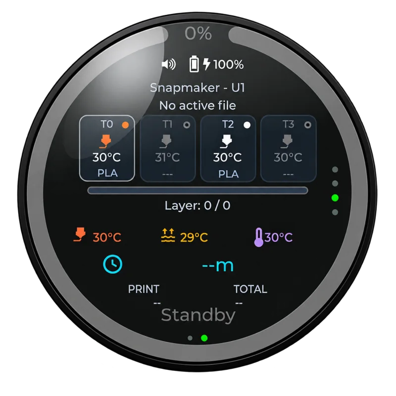
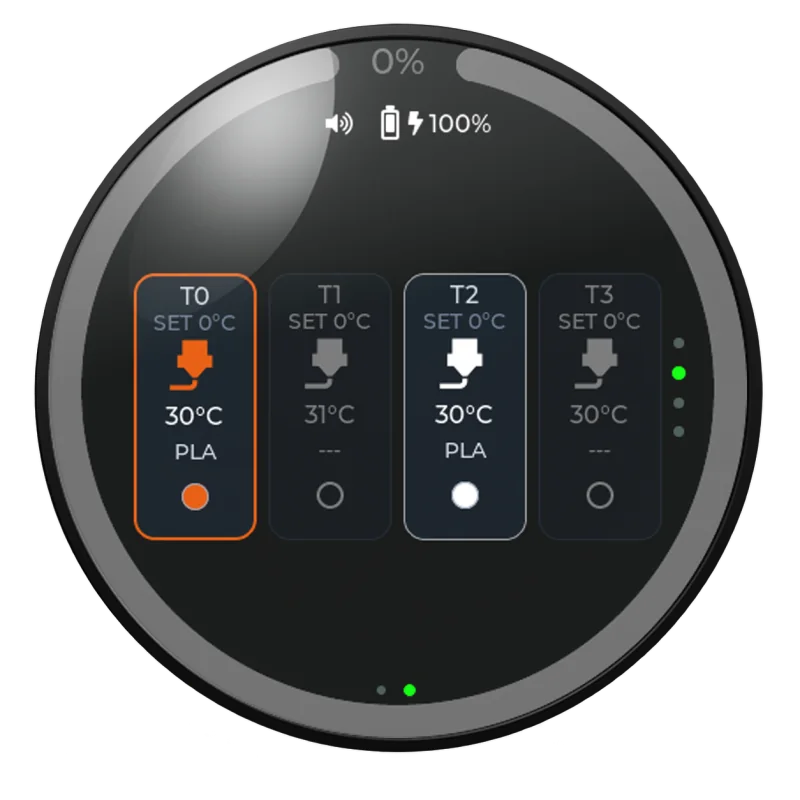
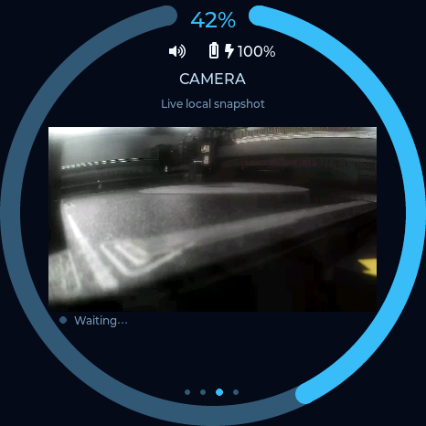
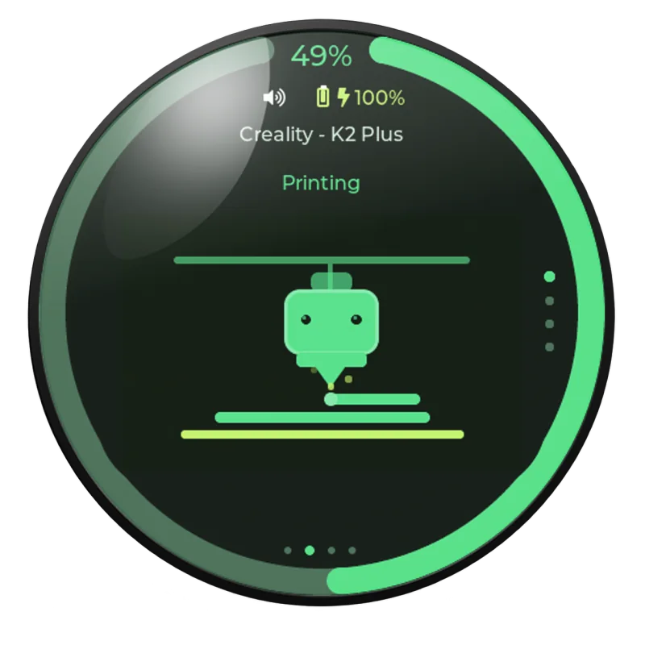
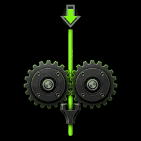
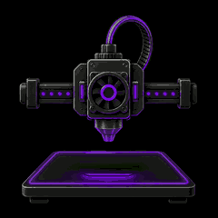
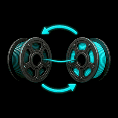
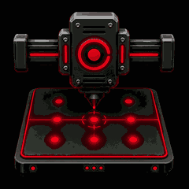
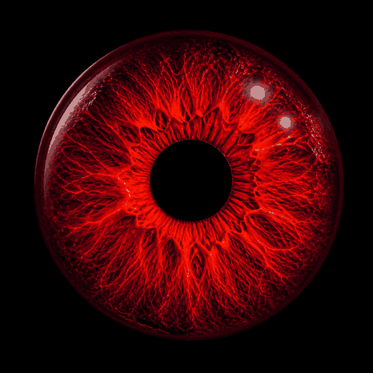
Three cases. Two display formats. One PrintDeck experience.
Three original case designsRound and square displaysPRINT IT YOURSELFOne PrintDeck experience
The Riverstone
ROUND DISPLAY
The Riverstone is a pocket-sized round enclosure made to move between the printer, desk and workshop. MagSafe-compatible Qi charging keeps power cable-free, while integrated magnets let it live on a refrigerator, tool cabinet or other metal surface.
Pocket-sizedSmall enough to carry wherever your prints take you.MagSafe-compatible QiMagnetic wireless charging makes topping up effortless.Built-in magnetsAttach it to a refrigerator, tool cabinet or other metal surface.Advanced optionsThe complete PrintDeck monitoring experience remains close at hand.
At first, PrintDeck was simply a display connected to the printers we used while developing the software. I often held the bare screen in my hand as I worked.
Near dawn, after a long development session, a slightly funny thought appeared: a smooth river stone. What if the monitor could sit in the hand like a pebble—soft, calm and shaped to fill the palm?
Two requirements made that form worth pursuing. It needed wireless charging and battery life measured in days, so even long prints could be monitored without constant charging. It also needed strong built-in magnets, making a refrigerator or metal cabinet a safe, natural home for the device.
The design took many prototypes, partial prints, fit checks and careful calibration. Material mattered too; the marble filament finally gave The Riverstone the quiet, stone-like character the idea called for.
“The first time I held the finished shape, I knew: this is it.”
Today, that simple object carries an advanced wireless print monitor. It feels approachable enough for anyone to use, yet it keeps serious printer information close at hand.
The Scuttle
ROUND DISPLAY
The Scuttle shares The Riverstone's soft, compact character, but takes a different approach inside. The enclosure opens from both the top and bottom, making assembly and servicing more direct. Its slightly larger body provides extra working room, with a dedicated mounting system for both the screen and the Qi charging coil.
Once The Riverstone had been packed tightly with electronics, charging hardware and a battery—without a spare millimetre inside—I knew there needed to be an alternative with more room and more colour.
I love distinctive filaments, so The Scuttle grew around a carefully fitted screen collar and interchangeable colour accents—including playful, candy-like combinations made with translucent materials.
The enclosure can be assembled from either direction. Its screwed-on base opens the case from below, while the upper construction provides access from above.
I print on Bambu Lab machines, and refining this enclosure took considerable time, many prototypes and several construction options. The final 3MF turns that work into a straightforward print with a reliably clean result.
Despite sharing The Riverstone's round premise, The Scuttle is a completely different approach with its own construction and a simpler assembly path. Five strong rear magnets and wireless charging preserve the freedom that shaped the original idea.
Its real character comes from material and finish. Fuzzy Skin, translucent filaments and multicolour accents leave the visual possibilities unusually wide open—this is a case made for experimenting.
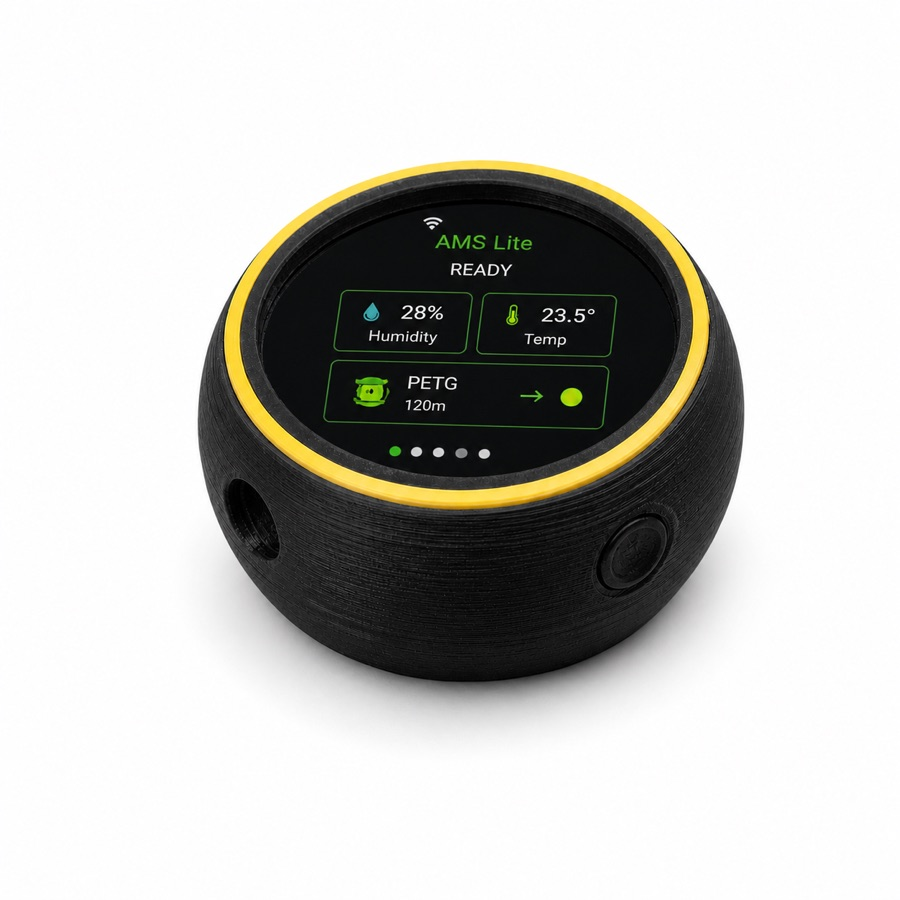
Fuzzy Skin · black with a yellow accent
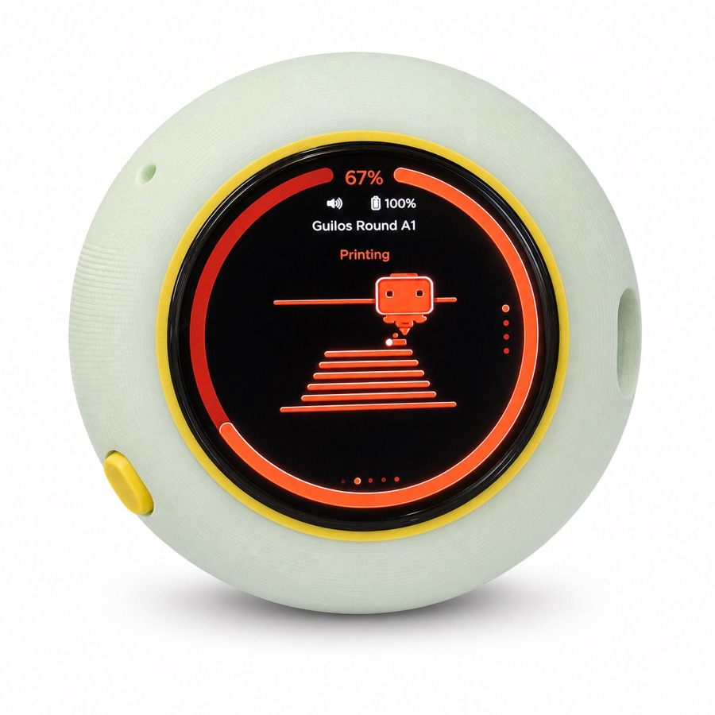
Translucent mint · yellow accent
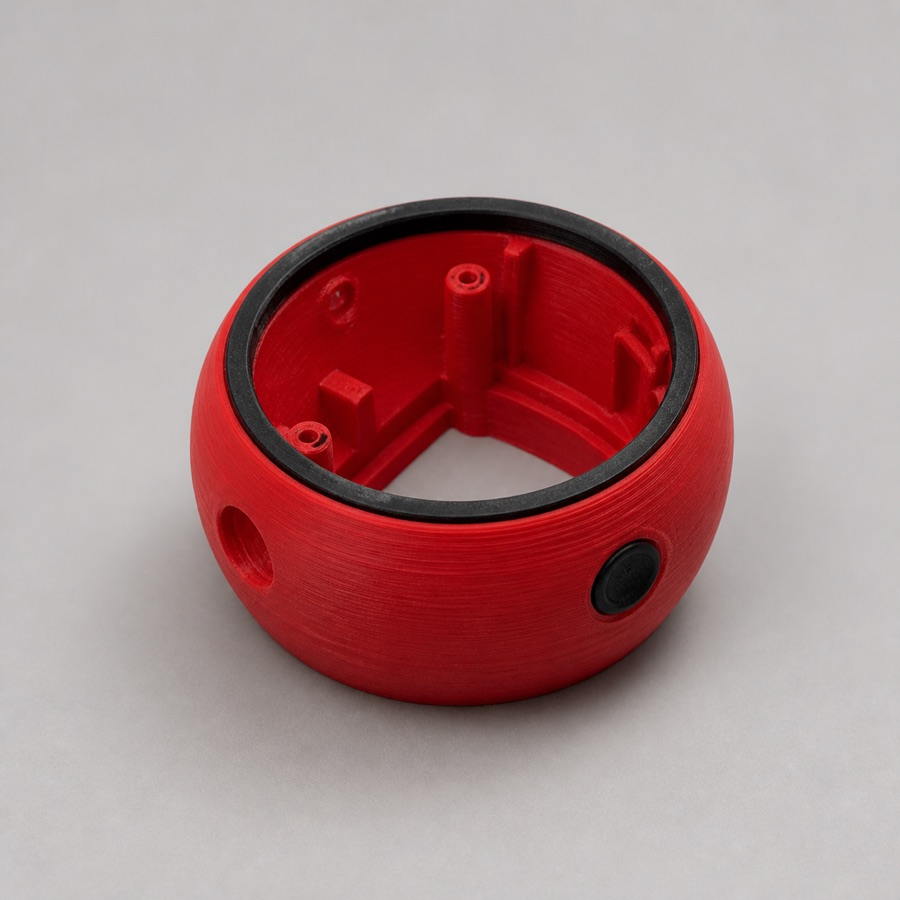
Red shell · contrasting black collar
Snapmaker U1 Mini case
SQUARE DISPLAY
Designed as a miniature companion to the tool-changing Snapmaker U1, this enclosure echoes the printer's confident, box-like silhouette. The square PrintDeck screen turns live job status into a tiny desktop counterpart to the machine—for a U1 owner, it feels like the missing status console.
The printer that inspired a miniature—and later its own PrintDeck.
U1 MINI · DESIGN STORY
From miniature to monitor.
I have owned a Snapmaker U1 from the first Kickstarter batch. Its design caught me immediately—even before the printer was released, I used the available photographs to create U1 Mini models at 1:5 and 1:10 scale.
The production machine exceeded my expectations in both build quality and print quality. Even with other printers available, the U1 became my default choice and pulled me into the Snapmaker community; together with a friend, I now run a Facebook group for Polish U1 users.
When the idea for PrintDeck appeared, the U1 Mini enclosure appeared with it. It became both a useful device and my favourite gadget: an advanced wireless print monitor that now feels inseparable from working with the U1.
I designed the enclosure to be straightforward to print and refined the 3MF until the process became “hit print and have fun.” It is intentionally less detailed than the original scale miniatures because it serves a different purpose, but the open structure and unmistakable U1 character remain.
Getting there required many prototypes, partial prints, small adjustments and a serious amount of filament. The U1 prints this enclosure—and the other PrintDeck cases—on Snapmaker's official smooth plate, whose cast-like first layer is among the best I have achieved on any build surface.
PrintDeck follows me from the refrigerator while I cook to the bedside table at night, so I no longer make the instinctive trip back to the printer just to see what is happening. Mobile apps exist, but a dedicated physical monitor is a completely different experience.